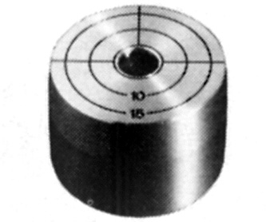
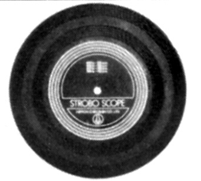
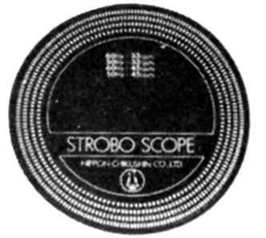
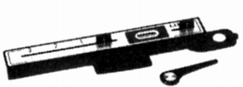
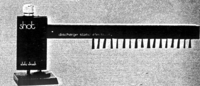
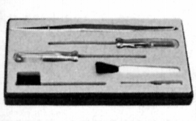
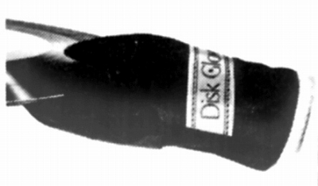
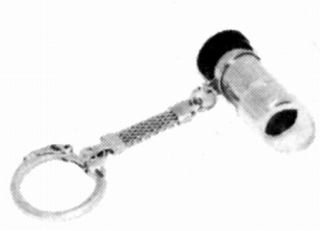

その他の製品
�@水平器
LGアダプター

■価格 2,500円
■備考 プレイヤーのセンタースピンドルに
装着して使用。中心が丸形水泡水準器。
目盛りはオーバーハングゲージ。
EPレコード用アダプターとしても使用。
�Aストロボマット
ストロボマット

■価格 （大）900円 （小）700円
■備考 ターンテーブルマット型
ストロボスコープ

■価格 400円
■備考 60・50Hz、33 1/3・45回転対応
�B針圧計
ライブラ

■価格 3,000円
■備考 天秤型。
測定範囲0〜3.0g
0.1g単位。中央は横型気泡水準器。
�C帯電除却器
ショット ST-580

■価格 5,800円
■備考 自己放電式。
カーボンファイバー使用。
�Dその他
フィックスセット

■価格 600円
■備考 プレイヤー用の工具セット。
ドライバー3本+ピンセット+ハード・ソフトブラシ。
DG-100

■価格 1,000円
■備考 レコード手袋。
ベルベット素材のディスクグローブ。
SL-15

■価格 500円
■備考 スタイラスルーペ。
倍率 15倍。
オーム/日本蓄針のインデックスへ